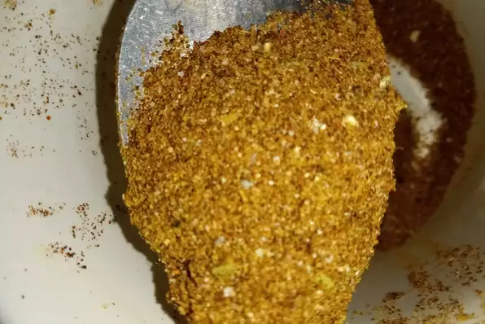

Ingredients
- 1 tablespoon chili powder
- 1 ½ teaspoons ground cumin
- 1 teaspoon sea salt
- 1 teaspoon ground black pepper
- ½ teaspoon ground paprika
- ¼ teaspoon garlic powder
- ¼ teaspoon onion powder
- ¼ teaspoon crushed red pepper flakes
- ¼ teaspoon dried oregano
Steps
Mix together chili powder, cumin, salt, pepper, paprika, garlic powder, onion powder, red pepper flakes, and oregano in a small bowl.